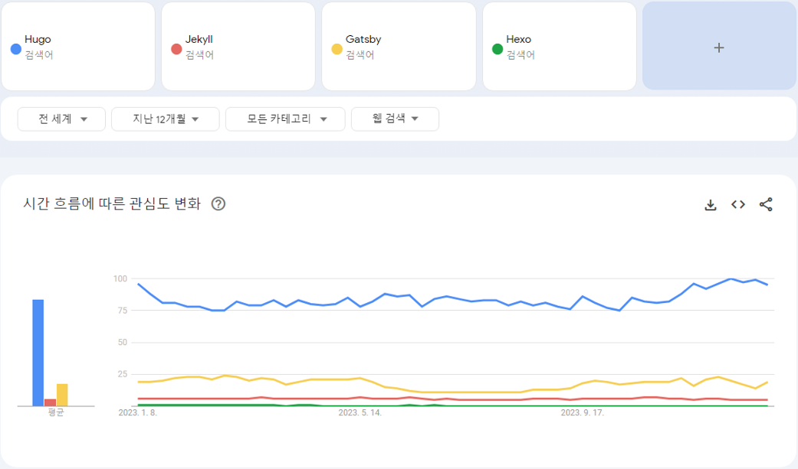
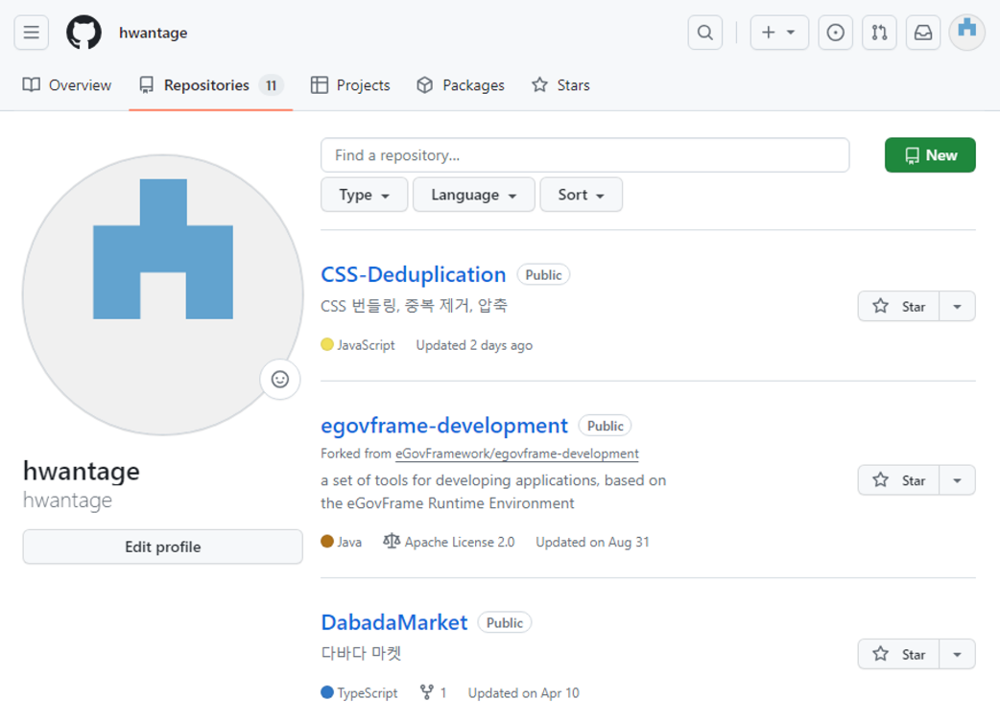
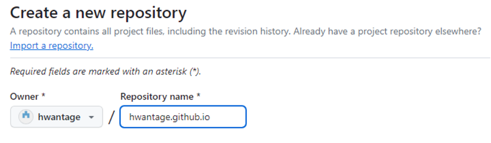
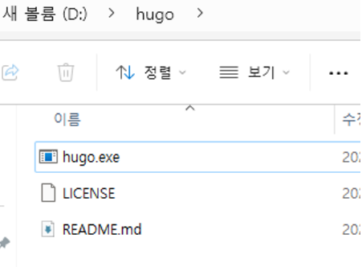
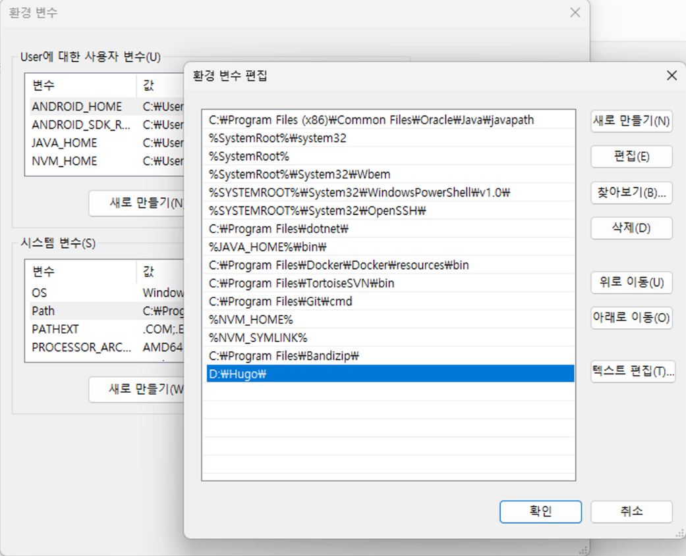
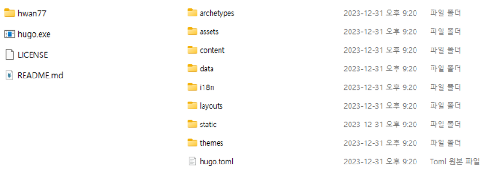
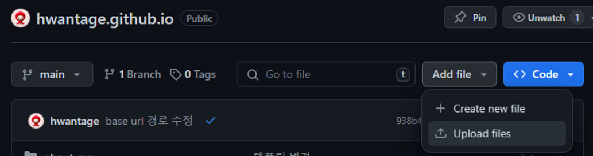
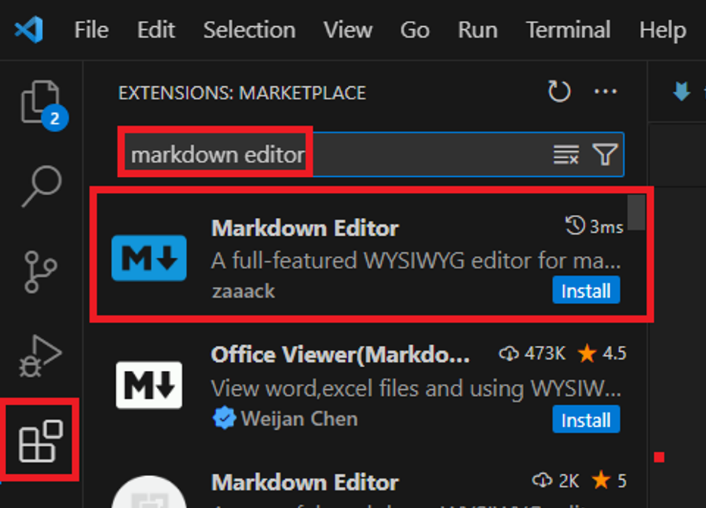
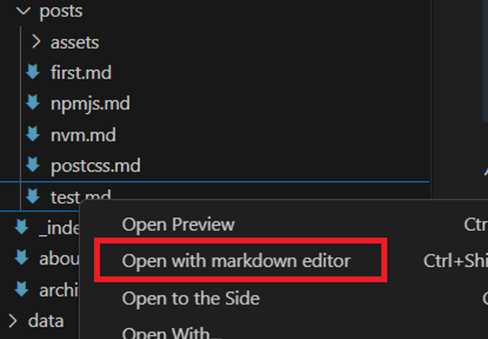
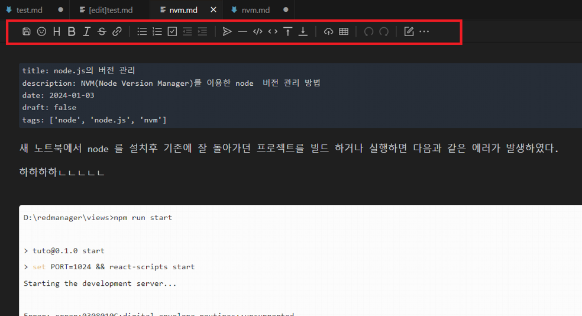

HUGO를 이용한 정적 사이트 생성 및 github pages를 이용한 블로그 운영 방법
Agenda
- SSG 개념
- JAM Stack 개념
- SSG 툴
- Github 계정 생성 및 사용
- Github pages 사용법
- HUGO를 이용한 블로그 생성
- Markdown 사용법
- VSCode Markdown 에디터 활용법
SSG 개념
정적 사이트 : 단순 html, css, js 로만 구성된 사이트.
동적 사이트 : 게시판, 대시보드 등 백엔드 데이터 연동 또는 API에 따라 동적으로 구성된 사이트.
SSG : Static Site Generator 정적 사이트 생성기 = 정적 사이트를 쉽게 만들 수 있도록 도와주는 도구
JAM Stack 개념
JAM(JavaScript, API, Markup Stack): JavaScript, API, HTML이나 CSS 등을 칭하는 Markup으로 이루어진 웹 구성 방법
SSG 툴
Gatsby
Jekyll : github pages 공식 지원
Hexo
Hugo
…
다양한 툴이 있는데 Hugo가 가장 널리 사용되는 것으로 파악됨.

https://trends.google.co.kr/trends/explore?q=Hugo,Jekyll,Gatsby,Hexo&hl=ko
Github 계정 생성 및 사용
계정 생성 : https://github.com/
PC에 git 설치 https://git-scm.com/download/win
설치 확인 방법 command 창을 열어 아래의 명령어로 확인
> git version
git version 2.40.0.windows.1
Github pages 사용법
내가 제작한 페이지를 어딘가에 호스팅을 해야 하는데 올릴 서버가 마땅히 없을 때 github에서 제공하는 무료 호스팅 기능을 이용한다.
Git 계정은 일단 있다고 가정하고 본인의 Git 계정으로 로그인하여 Repositories 탭에서 New 버튼을 클릭한다.

Repository name 은 반드시 Owner아이디.github.io 로 입력한다.

Settings > Pages 메뉴에서 main 브랜치 선택 후 Save 버튼 클릭.
뭔가 아무거나 파일을 올리면 사이트가 활성화 된다.
아무 것도 올리지 않은 경우 Readme.md 파일 내용이 나타난다.
index.html 파일을 올리면 index.html 파일의 내용이 나타난다.
HUGO를 이용한 블로그 생성
Hugo 설치
아래의 Git Repository 에 접속 하여 OS에 맞는 설치 프로그램을 다운로드 한다.
https://github.com/gohugoio/hugo/releases/tag/v0.121.1
아래의 파일을 다운로드 받았다.
hugo_extended_0.121.1_windows-amd64.zip
D:\hugo 폴더에 파일 압축을 해제한다.

Windows 환경설정 Path 에 압축해제된 경로를 등록한다.
제어판 > 시스템 > 설정 > 고급 시스템 설정 > 고급 > 환경 변수

아래와 같이 커멘드 창에서 hugo version 을 쳤을 때 버전정보가 잘 표기된다면 설치 성공.
> hugo version
hugo v0.121.1-00b46fed8e47f7bb0a85d7cfc2d9f1356379b740 windows/amd64 BuildDate=2023-12-08T08:47:45Z VendorInfo=gohugoio
Hugo 프로젝트 만들기
D:\hugo 폴더로 이동하여 아래의 명령어로 프로젝트를 생성한다.
# hugo new site <프로젝트이름>
> hugo new site hwan77

hwan77 폴더가 생성되었고 우측과 같은 파일들이 설치되어 있다.
휴고 템플릿 사이트에서 마음에 드는 템플릿을 다운로드 한다. https://themes.gohugo.io/
Archie 템플릿을 설치해본다.
https://github.com/athul/archie
/> hugo new site archie
/> cd archie
/archie> cd themes
/archie/themes> git clone https://github.com/athul/archie.git
hugo.toml 파일의 내용을 아래와 같이 수정
baseURL = "https://hwantage.github.io"
languageCode = "en-us"
title = "Hwantage world"
theme="archie"
copyright = "© hwantage"
# Code Highlight
pygmentsstyle = "monokai"
pygmentscodefences = true
pygmentscodefencesguesssyntax = true
disqusShortname = "hwantage"
paginate=10 # articles per page
[params]
mode="toggle" # color-mode → light,dark,toggle or auto
useCDN=false # don't use CDNs for fonts and icons, instead serve them locally.
subtitle = "Hwantage world blog with hugo Archie template"
mathjax = true # enable MathJax support
katex = true # enable KaTeX support
# Social Tags
[[params.social]]
name = "GitHub"
icon = "github"
url = "https://github.com/hwantage"
#[[params.social]]
#name = "Twitter"
#icon = "twitter"
#url = "https://twitter.com/athulcajay/"
#[[params.social]]
#name = "GitLab"
#icon = "gitlab"
#url = "https://gitlab.com/athul/"
# Main menu Items
[[menu.main]]
name = "Home"
url = "/"
weight = 1
[[menu.main]]
name = "All posts"
url = "/posts"
weight = 2
[[menu.main]]
name = "About"
url = "/about"
weight = 3
[[menu.main]]
name = "Tags"
url = "/tags"
weight = 4
Hugo exampleSite 코드 복사
themes/archie/exampleSite 폴더의 파일들을 /archie/content 폴더로 복사
Hugo 포스트 작성
/archie> hugo new posts/first.md
위와 같이 하면 content 디렉토리 밑에 posts 디렉토리 하위로 first.md 파일이 생성된다.
/content/posts/first.md 파일의 내용을 원하는대로 수정
Hugo 서버 실행
/archie> hugo server -D
http://localhost:1313/ 로 접속하여 결과 확인
빌드 및 배포하기
1. 빌드
새 글이 정상적으로 보인다면 이제 빌드를 할 차례입니다.
블로그 루트 디렉토리로 이동하여 아래 명령으로 빌드합니다.
/archie> hugo -D
Start building sites …
hugo v0.110.0-e32a493b7826d02763c3b79623952e625402b168+extended linux/amd64 BuildDate=2023-01-17T12:16:09Z VendorInfo=snap:0.110.0
| EN
-------------------+-----
Pages | 7
Paginator pages | 0
Non-page files | 0
Static files | 57
Processed images | 0
Aliases | 3
Sitemaps | 1
Cleaned | 0
Total in 61 ms
빌드가 완료되면 public 디렉토리에 html을 포함한 여러가지 파일들이 생성됩니다. 이제 이 파일들을 github에 푸시하여 배포하면 끝납니다. 푸시한 후에 레포지토리명을 브라우저 주소창에 입력하여 접속하면 배포된 블로그를 확인할 수 있습니다.
푸시하면 배포까지는 1분 가량이 시간이 소요되니 1분 후 다시 시도하면 블로그 화면을 보실 수 있습니다.
명령어에서 뒤에 붙는 -D 옵션은 draft 문서도 보여준다는 표시인데, draft란 현재 이 문서가 작업 중인지 아닌지 나타내는 특성으로 front matter에 포함되어있다. 문서의 front matter부분에 draft = true로 되어있으면, hugo server -D로 했을 때에는 이 문서도 포함되어 보여주지만 나중에 빌드할 때 생성되는 html에는 포함되지 않는다. 따라서 문서를 작업할 때 draft = true로 해놓고 localhost로 확인하면서 작업한 다음 나중에 작업을 완료하면 저 부분을 지우면 된다.
참고로 public 폴더의 기존 파일을 모두 삭제하고 빌드롤 수행하려면 –cleanDestinationDir 옵션을 추가하면 된다.
hugo --cleanDestinationDir
2. 배포
public 디렉토리의 내용을 github에 업로드

드래그 드롭으로 싹다 업로드
잠시 후 확인 https://hwantage.github.io
Markdown 사용법
VSCode Markdown 에디터 활용법
Visual Studio Code 실행하여 Extension 설치

파일 우마우스 클릭 후 Open with markdown editor 클릭

WYSIWYG방식으로 편집 (What You See Is What You Get)

또다른 방법은 노션에서 작성 후 Copy & Paste 해도 됨. 단, 노션에서만 제공하는 마크다운 문법 깨질 수 있으니 주의가 필요하다.